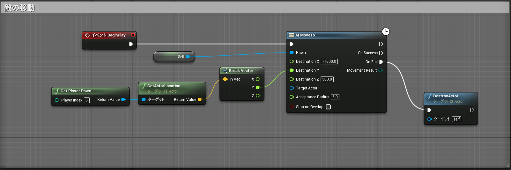
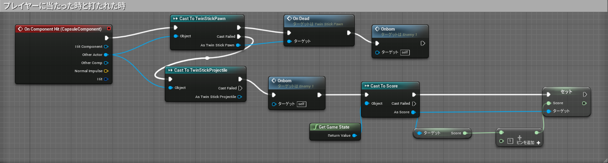

今回、UE4を使って3Dシューティングゲームを作っていきます。
最初に敵の本体を作っていきます。下にある｢Contents｣で右クリックし、新しいフォルダを作ります。フォルダができたら右クリックし、｢Blueprint Class｣から｢Pawn｣を選択し、名前を｢BP_enemy｣に変更します。左上の｢Add Component｣から｢Sphere｣と｢Sphre Collision｣を追加します。コリジョンを調整し当たり判定をつけます。これで本体ができました。
続いて、敵が動けるようにしていきます。左上で｢NavMeshBoundsVolume｣を検索し追加します。これは動くことのできる範囲をしていするものなのでマップ全体が入るように調整します。Pボタンを押すと範囲が表示されるのでマップ全域に入っていたら大丈夫です。
敵の動くための処理を作っていきます。先ほど作った｢BP enemy｣を開き、タブから｢Event Graph｣を選択します。ノードを以下のように配置していきます。
これで、プレイヤーを追跡する敵ができました。続いて、プレイヤーに当たった時と打たれた時の処理を追加していきます。ノードを以下のように追加していきます。
これで敵の処理はできました！
次:システムの作成